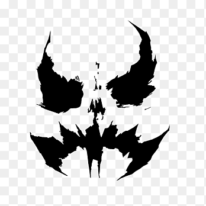

Galeria de Vilão
- Coringa

- Pinguim

- Charada

- Bane

- Espantalho 
História de vilão
🃏 Coringa (The Joker)
Origem:
O Coringa é o inimigo mais famoso do Batman. Sua origem exata é incerta — e ele mesmo afirma que prefere ter múltiplas versões de sua história. A mais aceita é a de A Piada Mortal, onde ele era um comediante fracassado que, após cair em um tanque de produtos químicos, teve sua aparência transformada e sua sanidade destruída.
Seus grandes aliados